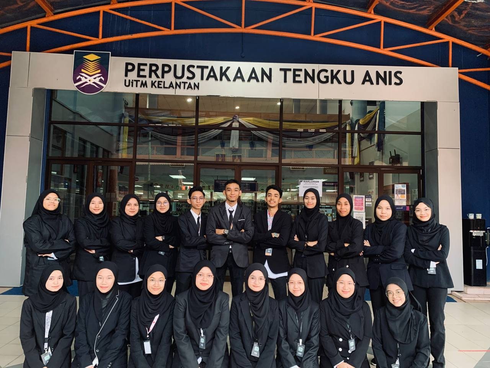

E X P E R I E N C E
MY EXPERIENCE
Experience is the best techer and the worst experiences teach the best lessons!

ACADEMIC CLUB; ASSOCIATION OF INFORMATION SCIENTISTS (AIS)
From secretariat to protocol exco. I have joined this club since semester 1 and semester 4 was upgraded to the post of of protocol exco. I have learnt a lot of new things that i have never done in the secondary school. It is a great experience when I need to be the vice program director of talk program.
NON-ACADEMIC CLUB; PERPUSTAKAAN TENGKU ANIS READERS CLUB (PTARC)
In the non-academic club, I was given the position of Vice President. The journey is the same as the academic club I once joined this club in semester 1. In this club, I was given the task of program director. The journey of the program was not easy when the program that day, I was tested by the death of my father. I am grateful that the program is still running and the program committee is giving their best. It was an experience I will never forget.